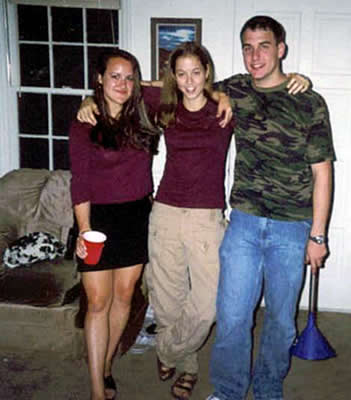

What do you say about Genevieve. Well, there's alot. A whole bunch. She has by far the most neglected Friend Page. Since the genesis of "Thursday", Genevieve has proven to be so much more than a lover of Luigi. She has grown by leaps and bounds, and she continues to change and evolve.
As the story goes, I met Genevieve at Bolton one afternoon when Missy introduced us. I guess Missy was alittle more friendly with her hallmates than I was, because she tended to at least invite them to lunch with her. Needless to say, we hit it off, and it turned out the three of us became good friends throughout our freshman year. Despite some Cocoa Krispie-related misunderstandings during the infamous Spring Break 2002, we managed to survive the year as friends.
In those early days, Gen and I always somehow remained close friends. Even when she moved off campus, I would still come over to her place on Thursdays so we could watch ER. The summer I worked at Taco Mac, I would call her all the time when I got off work to see how things were going down in Alpharetta. When she moved out to Shoal Creek, when I was riding my bike home, I would stop by and we'd hang out. We'd throw some burgers on the grill and, you know, grill out. Somehow, no distance could separate the two of us.

| The original "Three Musketeers"...in all their glory. Missy's about to take a body shot. Gen's going to do a keg stand. And me, well, I'm going upstairs to shoot Everclear and play Mario Kart! |
In the years since freshman year, we have grown so much closer. I was so privileged to be the first person Genevieve ever came out to, which occurred in the beginning of 2003. I was so scared when she told me she had something "important" to tell me. You know the drill—either she's dying or she's gay. It turned out ok, and it was like I was getting to know a whole new facet of her personality (you know, the one that has sex w/ women!)
Since then, Gen and I have gone on several adventures together. Prides 2003 and 2004, for example. It was all her fault that we didn't get into Backstreet that one time! But that's ok, I liked Steak N' Shake so much better. It was alot of fun falling asleep on the lawn during the more recent Pride. Also, all those nights seeing Heidi Hensley (and various other sexy ladies) have been very cool.
There's no one that has been here for me more than Genevieve. She is a genuine person that I am so blessed to have in my life. She cares very deeply for her good friends. She's proven to me, time and again, that the truest friends stand by you.
Through the good times, and the bad.
Since then, Gen and I have gone on several adventures together. Prides 2003 and 2004, for example. It was all her fault that we didn't get into Backstreet that one time! But that's ok, I liked Steak N' Shake so much better. It was alot of fun falling asleep on the lawn during the more recent Pride. Also, all those nights seeing Heidi Hensley (and various other sexy ladies) have been very cool.
There's no one that has been here for me more than Genevieve. She is a genuine person that I am so blessed to have in my life. She cares very deeply for her good friends. She's proven to me, time and again, that the truest friends stand by you.
Through the good times, and the bad.

For my good friend Gen, an endearing and wonderful
song...
So Like A Rose
Baby thinks he's dying
Lost inside his bedroom
Mommy won't stop crying
And daddy's always working
There's no going back
There's no going back
There's no going back
On this one
Baby wakes up with the sun
While everyone is sleeping
He thinks he's going crazy
But this could be the big one
There's no going back
There's no going back
There's no going back
Sleeping with ghosts
It's such a warming experience
The stars are out tonight
Only they can hear you breathing
You're so like a rose
You're so like a rose
You're so like a rose
I wish you could stay here